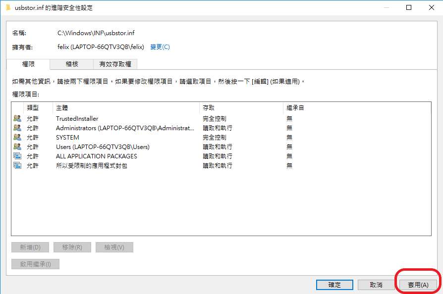

修改權限的步驟
- 以 C:\Windows\INF\usbstor.inf 檔案為範例
- 假設登入 Windows 10 的使用者帳號為 felix
step 1. 將滑鼠移到 usbstor.inf 上，並按滑鼠右鍵，選 內容 。
step 2. 選 安全性 -〉 進階 。

step 3. 按 變更 擁有者，輸入使用者帳號，按 檢查名稱，此時會顯示完整的帳號資訊，按 確定 離開。


step 4. 回到上一層後，按 套用 ，顯示警告訊息，按 確定。


step 5. 將顯示 usbstor.inf 內容的視窗全部關閉後，再重開 內容 視窗。
step 6. 新增 一個主體。

step 7. 選取一個主體。

step 8. 輸入帳號並檢查名稱，再按確定。


step 9. 修改基本權限後，按確定。

step 10. 確認帳號已正確加入，並擁有完全控制的權限。

step 11. 按 套用及確定，顯示安全警告的訊息，按 是。